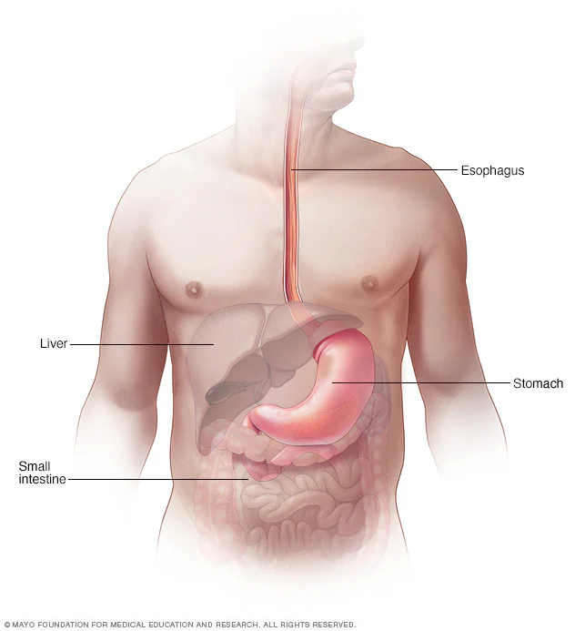
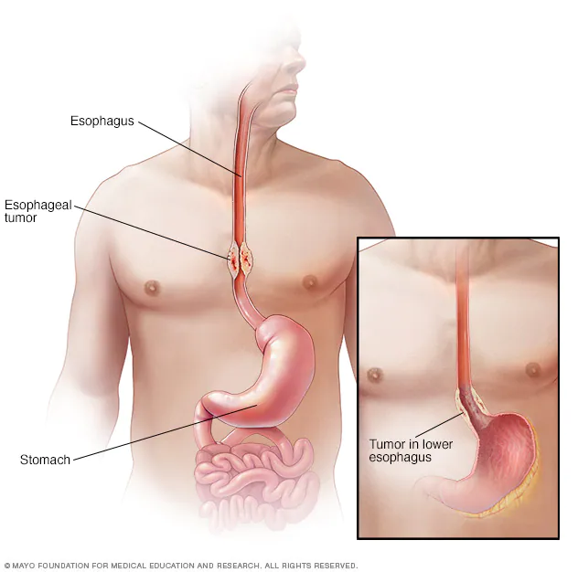

CÁNCER DE ESÓFAGO
Descripción general
Esófago

Cáncer de esófago

El cáncer esofágico es el cáncer que ocurre en el esófago, un tubo largo y hueco que va desde la garganta al estómago. El esófago ayuda a mover la comida que se traga desde la parte posterior de la garganta hasta el estómago para ser digerida
El cáncer de esófago generalmente comienza en las células que recubren su interior. El cáncer de esófago puede ocurrir en cualquier lugar a lo largo del esófago. El cáncer de esófago es más habitual en los hombres que en las mujeres.
El cáncer de esófago es la sexta causa más común de muertes por cáncer en todo el mundo. Las tasas de incidencia varían dentro de las diferentes ubicaciones geográficas. En algunas regiones, las mayores tasas de cáncer de esófago pueden atribuirse al consumo de tabaco y alcohol o a determinados hábitos nutricionales y a la obesidad.
Síntomas
Algunos de los signos y síntomas del cáncer de esófago son los siguientes:
- Dificultad para tragar (disfagia)
- Pérdida de peso sin proponérselo
- Dolor, presión o ardor en el pecho
- Acidez estomacal o indigestión que empeoran
- Tos o ronquera
Por lo general, el cáncer de esófago incipiente no causa signos ni síntomas.
Cuándo debes consultar a un médico
Pide una cita con el médico si tienes signos y síntomas persistentes que te preocupen. Si te diagnosticaron esófago de Barrett, una enfermedad precancerosa causada por el reflujo ácido crónico, el riesgo de tener cáncer de esófago es mayor. Pregúntale al médico qué signos y síntomas pueden indicar que la enfermedad está empeorando. Los exámenes de detección del cáncer de esófago pueden ser una opción para las personas con esófago de Barrett. Si tienes esófago de Barrett, habla con el médico acerca de las ventajas y las desventajas de los exámenes de detección.
Causas
No se sabe con exactitud cuál es la causa del cáncer de esófago. El cáncer de esófago se produce cuando las células del esófago desarrollan cambios (mutaciones) en su ADN. Los cambios hacen que las células crezcan y se dividan sin control. La acumulación de células anormales forma un tumor en el esófago que puede crecer e invadir las estructuras cercanas y extenderse a otras partes del cuerpo.
Tipos de cáncer de esófago
El cáncer de esófago se clasifica según el tipo de células que intervienen. Conocer el tipo de cáncer de esófago que presentas permite determinar tus opciones de tratamiento. Los tipos de cáncer de esófago comprenden:
- Adenocarcinoma. El adenocarcinoma comienza en las células de las glándulas secretoras de mucosidad del esófago. Puede presentarse con mayor frecuencia en la parte inferior del esófago. El adenocarcinoma es la forma más común de cáncer de esófago en los Estados Unidos y afecta principalmente a los hombres blancos.
- Carcinoma de células escamosas. Las células escamosas son células delgadas y planas que recubren la superficie del esófago. El carcinoma de células escamosas se produce con mayor frecuencia en las porciones superior y media del esófago. El carcinoma de células escamosas es el cáncer del esófago más frecuente en todo el mundo.
- Otros tipos poco frecuentes. Algunas formas raras de cáncer de esófago incluyen el carcinoma de células pequeñas, el sarcoma, el linfoma, el melanoma y el coriocarcinoma
Factores de riesgo
Se cree que la irritación crónica del esófago puede contribuir a los cambios que causan el cáncer de esófago. Los factores que producen irritación en las células del esófago y que aumentan el riesgo de tener cáncer de esófago incluyen:
- La enfermedad por reflujo gastroesofágico
- El tabaquismo
- Los cambios precancerosos en las células del esófago (esófago de Barrett)
- La obesidad
- El consumo de bebidas alcohólicas
- El reflujo biliar
- Las dificultades para tragar debido a un esfínter esofágico que no se relaja (acalasia)
- El hábito de beber líquidos muy calientes
- La ingesta insuficiente de frutas y verduras
- Los tratamientos de radioterapia en el pecho o en la parte superior del abdomen
Complicaciones
A medida que el cáncer de esófago avanza, puede causar complicaciones como las que se indican a continuación:
- Obstrucción del esófago. El cáncer puede dificultar el paso de alimentos y líquidos a través del esófago.
- Dolor. El cáncer de esófago avanzado puede provocar dolor.
- Sangrado esofágico. El cáncer de esófago puede provocar sangrado. Si bien el sangrado, por lo general, es gradual, en ocasiones puede ser repentino e intenso.
Prevención
Puedes tomar medidas para reducir el riesgo de contraer cáncer de esófago. Por ejemplo:
- Deja de fumar. Si fumas, habla con tu médico sobre estrategias para dejar de hacerlo. Existen medicamentos y asesoramiento psicológico para ayudarte a dejar de fumar. Si no usas tabaco, no empieces a hacerlo.
- Si bebes alcohol, hazlo con moderación. Si eliges beber alcohol, hazlo con moderación. Para los adultos saludables, beber con moderación significa una bebida al día para las mujeres y hasta dos bebidas al día para los hombres.
- Come más frutas y verduras. Agrega una variedad de frutas y verduras coloridas a tu dieta.
- Mantén un peso saludable. Si tienes sobrepeso u obesidad, pregúntale al médico acerca de estrategias que te ayuden a perder peso. Ten como meta una pérdida de peso lenta y constante, entre 1 y 2 libras (de 0,5 a 1 kilogramo) por semana.